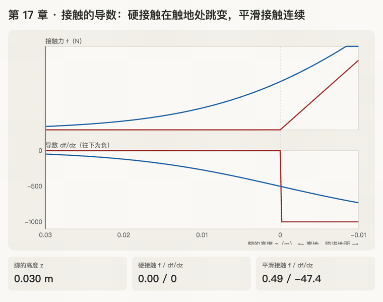

第 17 章 · 可微仿真与 SHAC：SuperMimic 之前，解析梯度是怎么来的
本地运行
git clone https://github.com/wikieden/robot-motion-rl
cd robot-motion-rl/code/notebooks
pip install jupyterlab torch numpy
jupyter lab ch17_shac.ipynb也可以下载后直接用 VS Code 打开 .ipynb 运行。需要 GPU 的章节在 Colab 里选「代码执行程序 → 更改运行时类型 → GPU」。
本章回答：既然解析梯度这么省样本（第 8 章），为什么不直接对物理仿真器求导？接触为什么让梯度变得没法用？SHAC 怎么用「短窗口 + critic」解决这个问题？SuperMimic 和它的关系是什么？
讲解日期：2026-11-20 · 上一章：第 16 章 AMP · 下一章：第 18 章 上真机
对应原文：SHAC 论文（papers/shac-2204.07137.txtL27–L29 摘要：平滑 critic、截断学习窗口；L79–L81；L109–L112 接触不光滑与平滑接触模型；§3（L155）；§3.2 优化地形（L224）；L182–L183 解析动力学在接触处不光滑；L202：任务时域 H = 1000，短视野 h = 32）；SuperMimic §2 相关工作（papers/supermimic-2610.28480.txtL146–L155）
本章缩写：SHAC = Short-Horizon Actor-Critic（短视野 / 演员-评论家）；BPTT = Backpropagation Through Time（反向传播 / 穿过 / 时间）；softplus：\(\log(1+e^x)\)，ReLU 的平滑版；sigmoid：\(1/(1+e^{-x})\)，softplus 的导数；β：平滑程度（读 "beta"）；k：接触刚度；z：脚离地高度（负数表示陷进地面）。全部缩写见 附录 · 缩写与术语表
讲解
第一步：可微仿真：让仿真器自己给导数（2026-11-20）
类比：第 9 章是「拆不开收音机，就自己画一张近似图」；可微仿真是「把收音机的电路图直接给你」。
可微仿真器在算下一状态的同时，还能给出 \(\partial s_{t+1}/\partial s_t\) 和 \(\partial s_{t+1}/\partial a_t\)（用自动微分实现物理公式）。有了它，第 10 章的 BPTT 可以直接在真仿真器上做，不需要学 world model。DiffMimic（papers/diffmimic-2304.03274.txt）就是这样做动作模仿的。
问题出在两处：接触让导数不可靠（第二步），时域长时梯度爆炸（第三步，和第 10 章一样）。
一句话：可微仿真器直接给导数，但接触和长时域让这些导数难用。
第二步：接触的导数：要么是 0，要么很大（2026-11-20）
类比：用尺子量「脚离地多高」时推力怎么变：脚在空中时，抬高或放低一点推力都是 0；一碰地，推力突然出现。
最简单的接触模型是罚函数：脚陷进地面（z < 0）才有力 \(f = k\,\max(0, -z)\)。它的导数在 z = 0 处跳变：
| z（m） | +0.020 | +0.005 | 0 | −0.005 |
|---|---|---|---|---|
| 硬接触 f（N） | 0 | 0 | 0 | 5.00 |
| 硬接触 df/dz | 0 | 0 | 0 | −1000 |
| 平滑接触 f（β = 0.01） | 1.27 | 4.74 | 6.93 | 9.74 |
| 平滑接触 df/dz | −119 | −378 | −500 | −623 |
（k = 1000 N/m。）硬接触时，脚只要在空中，梯度就告诉策略「抬脚落脚都没关系」（导数 0）；一碰地导数又突然变成 −1000。策略根本学不会「往下踩一点会得到支撑」。
平滑接触把 \(\max(0, -z)\) 换成 softplus：\(f = k\beta\log(1 + e^{-z/\beta})\)，导数 \(-k\cdot\text{sigmoid}(-z/\beta)\) 从 0 平滑过渡到 −k。代价是离地 2 cm 时也有 1.27 N 的「虚假」推力（原文 L109–L112 提到很多可微仿真用这种平滑接触）。
一句话：硬接触的导数在触地处跳变；平滑接触让导数连续，但物理不再精确。
第三步：SHAC：短窗口 + 平滑 critic（2026-11-20）
类比：第 10 章的下棋：只算几步，后面靠局面评估。
SHAC（2022）在可微仿真器上做的事，和 SuperMimic 第 10 章几乎一样（原文 L27–L29、L79–L81）：
- 截断学习窗口：一局 H = 1000 步，切成长度 h = 32 的短窗口（L202），每个窗口内做 BPTT，梯度最多连乘 32 次；1000 / 32 向上取整是 32 个窗口。
- 平滑的 critic：窗口末端接一个价值函数估计后面的回报。critic 是神经网络，本身是平滑的，起到「把崎岖的优化地形磨平」的作用（§3.2，L224 分析了长时域时地形如何变崎岖）。
SuperMimic 原文明说它的「critic 自举的短视野目标」是受 SHAC 启发的（L149–L150），区别在两处（第 10 章 L297–L300 附近）：用生存权重代替硬终止；critic 不用目标网络。
一句话：SHAC = 可微仿真 + 32 步窗口 BPTT + critic；SuperMimic 继承了这个结构。
第四步：SHAC vs SuperMimic：梯度从哪来（2026-11-20）
| SHAC | SuperMimic | |
|---|---|---|
| 梯度来自 | 可微仿真器（真物理公式） | 学出来的 world model |
| 仿真器要求 | 必须可微，接触常要平滑 | 任意刚体仿真器（MuJoCo Warp），不要求可微 |
| 接触 | 平滑接触 → 物理有偏差 | 模型从真实（硬接触）仿真数据里学，自己学到平滑的近似 |
| 速度 | 受仿真器限制 | 想象比仿真快 10–62 倍（第 11 章） |
| 风险 | 平滑带来的物理误差 | 模型误差（第 8 章动画的「world model 偏差」） |
SuperMimic 原文（L68–L70、L151–L155）强调：因为梯度来自学到的模型而不是对仿真器求导，它「兼容非光滑接触和不可微的实现」。学一个模型，等于用数据自动找到了一个「好求导的近似」，绕开了手工设计平滑接触。
一句话：SHAC 对真仿真器求导，要平滑接触；SuperMimic 对学到的模型求导，仿真器随便用。
动画演示：硬接触与平滑接触的导数

可交互版：animations/17-shac.html（滑块：平滑程度 β、脚的高度 z）。
怎么看：
- 上图：接触力随脚的高度 z 变化，红线是硬接触，蓝线是平滑接触（第二步）。
- 下图：两者的导数 df/dz；红线在 z = 0 处从 0 跳到 −1000，蓝线是连续的 S 形。
- 播放时脚从 3 cm 高处慢慢落下，竖线标出当前 z。拖 β：越小越接近硬接触，越大越「软」、虚假推力越大。
练习与作答记录
题 1（第二步）：k = 1000、β = 0.01，脚离地 1 cm（z = 0.01）时，平滑接触的力和导数各约是多少？（提示：\(\log(1+e^{-1}) \approx 0.313\)，\(\text{sigmoid}(-1) \approx 0.269\)。）
作答：（待作答）
题 2（第三步）：一局 H = 500 步，窗口 h = 16，要切成多少个窗口？窗口越短，梯度越稳还是越短视？
作答：（待作答）
题 3（第四步）：SuperMimic 的 world model 其实也学到了一种「平滑的接触」。和手写的 softplus 相比，它的平滑程度由什么决定？可能带来什么风险？
作答：（待作答）
口诀
收音机给了电路图，仿真器自己出导数；
脚在空中导数零，一碰地跳到负一千，策略学不会踩；
softplus 把台阶磨成坡，导数连续，代价是隔空有力；
SHAC 对真仿真求导要磨平，SuperMimic 对学的模型求导随便用。
本章复习卡片
M33（硬接触导数跳变、平滑接触 softplus 的取舍）、M34（SHAC 的两件法宝：截断窗口 + 平滑 critic；和 SuperMimic 的区别）
附录 · 延伸阅读
留给以后深入学习用，不影响本章主线。★ 是建议先读的。
推荐阅读
| 读什么 | 读哪里 | 读它为了什么 |
|---|---|---|
| ★ SHAC | papers/shac-2204.07137.txt L27–L29、L79–L81、§3（L155）、§3.2（L224）、L202 |
短视野可微 actor-critic 的原始论文 |
| ★ SuperMimic §2 | papers/supermimic-2610.28480.txt L146–L155 |
它和 SHAC、可微仿真、RWM 的关系 |
| DiffMimic | papers/diffmimic-2304.03274.txt |
直接在可微物理上做动作模仿 |
| 第 9、10 章 | 09-world-model.md、10-bptt-critic.md | 学模型、BPTT + critic 的细节 |
数学原理
- softplus 与 ReLU：\(\text{softplus}(x) = \log(1+e^x)\) 是 \(\max(0, x)\) 的平滑版；\(\beta\,\text{softplus}(x/\beta)\) 在 β → 0 时趋于 \(\max(0, x)\)。
- softplus 的导数是 sigmoid：\(\frac{d}{dx}\log(1+e^x) = \frac{1}{1+e^{-x}}\)。
公式清单
| 公式 | 意思 |
|---|---|
| \(f = k\max(0, -z)\) | 硬接触（罚函数） |
| \(f = k\beta\log(1 + e^{-z/\beta})\) | 平滑接触（softplus） |
| \(df/dz = -k\,\text{sigmoid}(-z/\beta)\) | 平滑接触的导数 |
| 窗口数 \(= \lceil H/h \rceil\) | SHAC 的截断窗口 |
代码对照：把本章的数字用代码算一遍
用 Python + NumPy 把讲义里讲过的数算一遍，不算练习题。代码在仓库本地
robot-motion-rl/solutions/chapter-code/ch17_shac.py，配套测试tests/test_ch12_18.py，notebook 在notebooks/ch17_shac.ipynb。Mac 上直接能跑，不需要 GPU：
bash cd robot-motion-rl/solutions/chapter-code uv run python ch17_shac.py uv run pytest tests/test_ch12_18.py
讲义 ↔ 代码（刚度、β、高度是编的；H = 1000、h = 32 取自 SHAC 论文）：
| 讲义 | 公式 | 写法 | 跑出来 |
|---|---|---|---|
| 第二步 硬接触 | k·max(0, −z) | hard_contact_force、hard_contact_grad |
z = −0.005：5.00 N、−1000 |
| 第二步 平滑接触 | softplus | soft_contact_force、soft_contact_grad |
z = 0：6.93 N、−500；z = 0.02：1.27 N、−119 |
| 第三步 窗口 | ⌈H/h⌉ | windows(1000, 32) |
32 |
关键几行：
f_hard = k * max(0.0, -z) # 只有陷进地面才有力
f_soft = k * beta * np.log1p(np.exp(-z / beta)) # softplus：台阶磨成坡
g_soft = -k / (1 + np.exp(z / beta)) # 导数是 sigmoid，连续
n_win = -(-H // h) # 向上取整：1000 步切成 32 段
代码里才看得到的 1 件事：
- 用
np.log1p(x)而不是np.log(1 + x)：x 很小时前者更精确；z 很大（脚很高）时 \(e^{-z/\beta}\) 接近 0，log1p不会丢精度。
自己改一改（不影响练习答案）：
- 把 β 改成 0.001，看 z = 0.02 处的虚假推力降到多少、z = 0 处的导数怎么变。
- 取 β = 0.003，写一个小循环让脚从 z = 0.03 落到 −0.01，比较两种接触力随 z 的曲线。